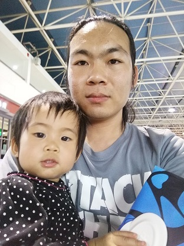

|  |
Yujie Wang I did not have passion in plant science until my last year in University of Science and Technology of China at 2010, in which summer I visited Cao's lab in Xishuangbanna Tropical Botanical Garden. I worked on early angiosperms for a few months as my undergraduate thesis. Then I continued my master study at the same university and did some experiments on hydraulic conductance methodology during 2011–2013 in Xishuangbanna. After that, I visited Tyree lab at Northwest Agriculture & Forestry University as "post-master" for 2 years and headed to Sperry Lab in 2015. Before heading into the science filed, my dream was becoming a poet, and it seems that I may not realize my dream throughout my life.
|